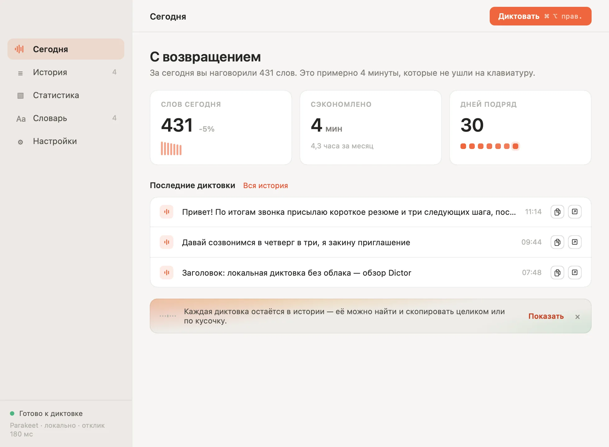
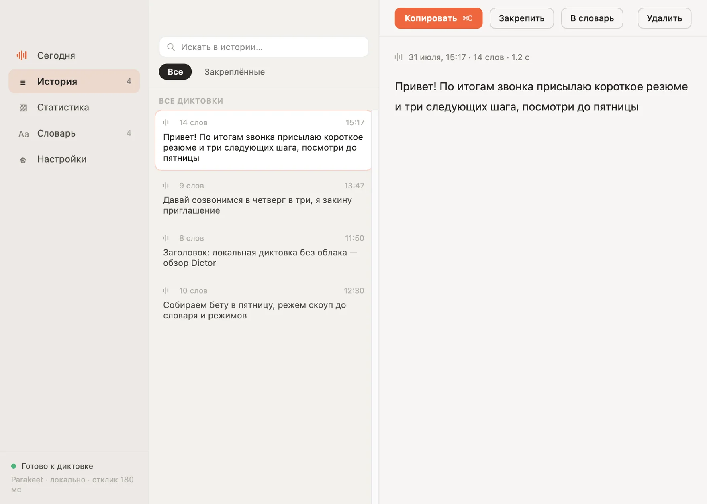
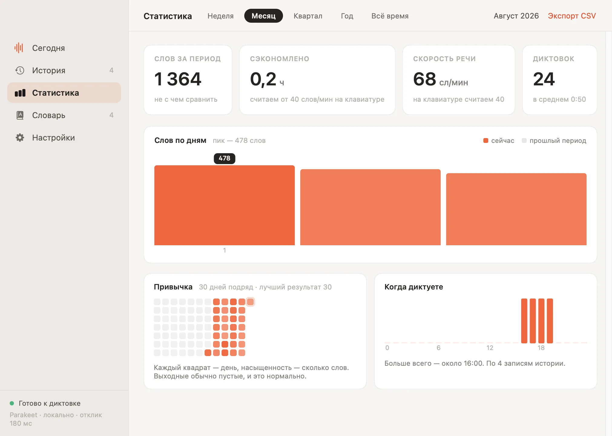
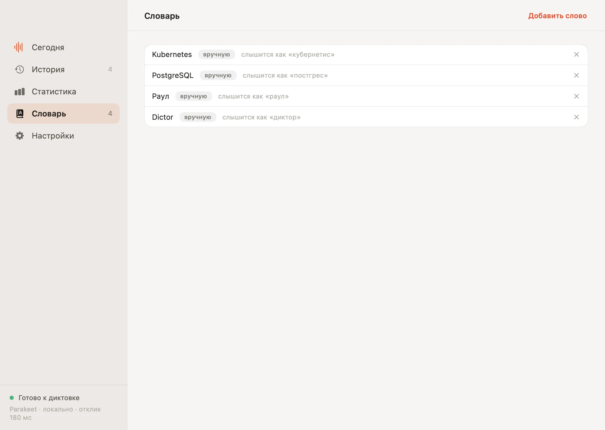
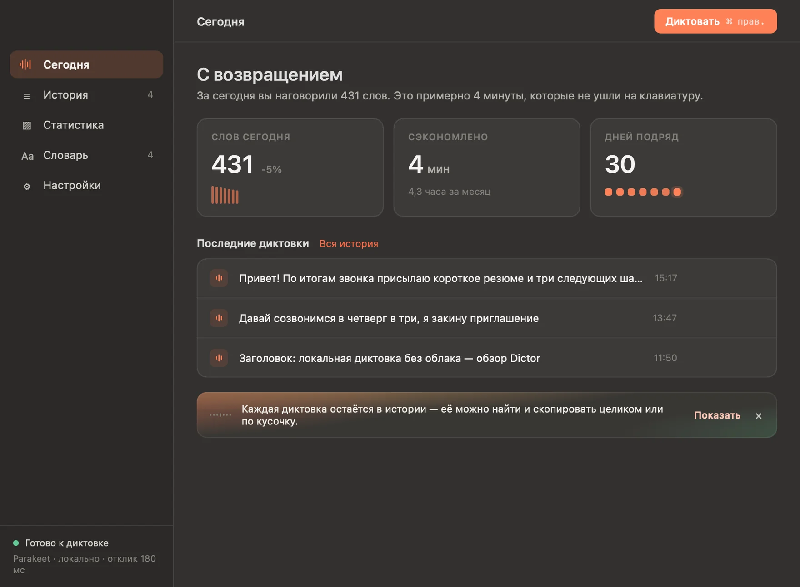
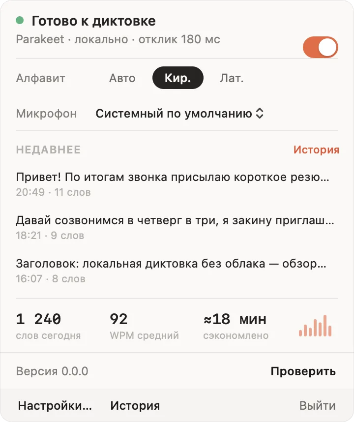
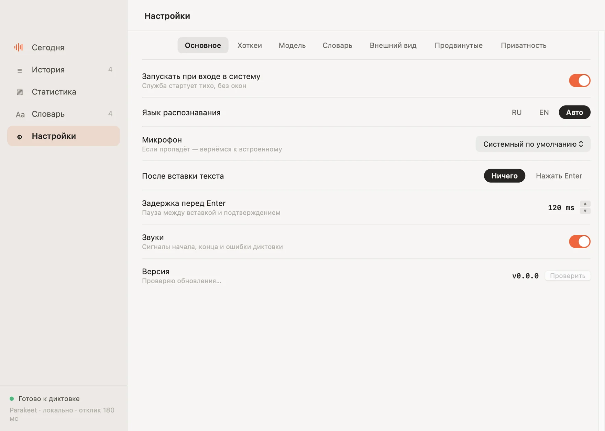

Поставьте курсор в любое поле, зажмите ⌘ + ⌥ прав. и говорите. Отпустили — текст встал туда, где стоял курсор. Распознаёт сам Mac, на Neural Engine: без аккаунта, без подписки, без облака.
Ничего не нужно открывать: приложение живёт в строке меню и ждёт клавишу.
Письмо, чат, поле поиска, редактор кода — любое место, куда вы обычно печатаете.
На экране появится капсула с волной — по ней видно, что вас слышно. Можно и переключателем: нажали — говорите, нажали ещё раз — готово.
Текст встанет под курсор. На полминуты речи уходит около полусекунды обработки.
Окно открывается из строки меню — но в обычный день оно не нужно вовсе.







Программы для диктовки просят доверить компании свой голос. Эта — не просит.
Аудио распознаётся на вашем Mac и удаляется, как только текст готов. Оно не отправляется ни на какой сервер — ни наш, ни чужой.
Интернет нужен дважды: один раз скачать модель и раз в шесть часов спросить номер последней версии. Проверку можно выключить — тогда приложение не ходит в сеть вовсе.
Исходный код открыт целиком под лицензией MIT: что программа делает с вашим голосом, видно построчно, а не со слов разработчика.
| Dictor | Облачная диктовка | Встроенная в macOS | |
|---|---|---|---|
| Аудио покидает Mac | никогда | каждая запись | для части языков |
| Работает без интернета | да | нет | ограниченно |
| Стоимость | нет | помесячно | нет |
| История с поиском | 10 000 диктовок | по-разному | нет |
| Свой словарь | да | обычно | нет |
| Языки | русский, английский и ещё ~17 | да | да |